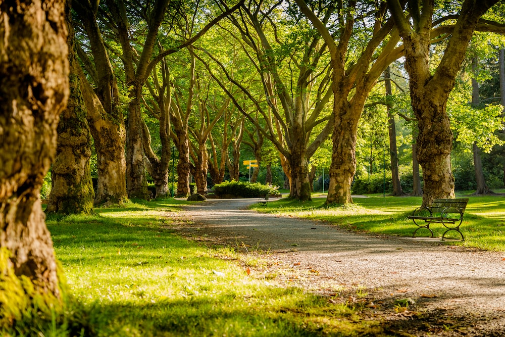

My Hometown
My hometown is a small town located in the countryside. It is surrounded by beautiful mountains and has a peaceful environment. The town has a population of around 10,000 people and is known for its agricultural activities.
History
The town was founded in the early 1800s by a group of settlers who were attracted to the fertile land in the area. They established farms and began to cultivate crops such as wheat, corn, and soybeans. The town grew slowly but steadily over the years, and by the early 1900s, it had become a thriving community.
Landmarks and Attractions
 |
The town is located near a range of beautiful mountains. These mountains are popular among hikers and nature enthusiasts who come to enjoy the scenic views and fresh air. |
 |
The town has many farms that produce fresh fruits and vegetables. Visitors can take a tour of these farms and learn about the farming process. There is also a farmers market that sells locally grown produce. |
|  | The town has a beautiful park with a lake, picnic areas, and playgrounds. It is a popular spot for families to spend time outdoors and enjoy the natural beauty of the area. |